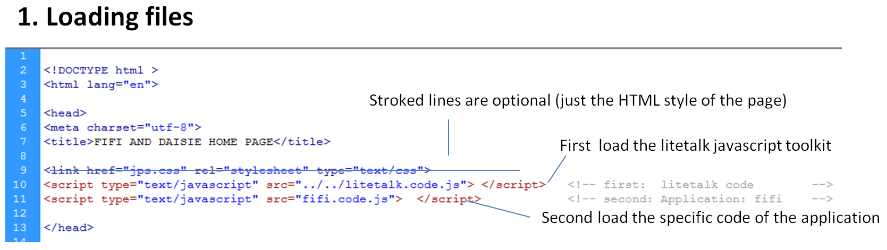
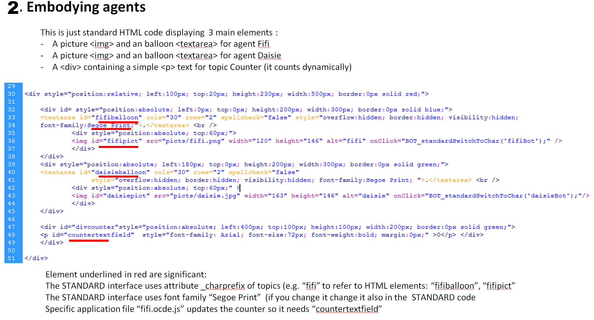
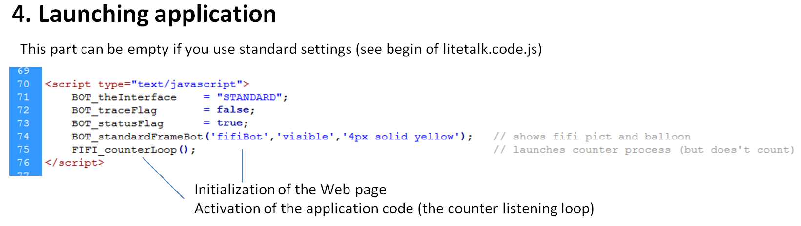
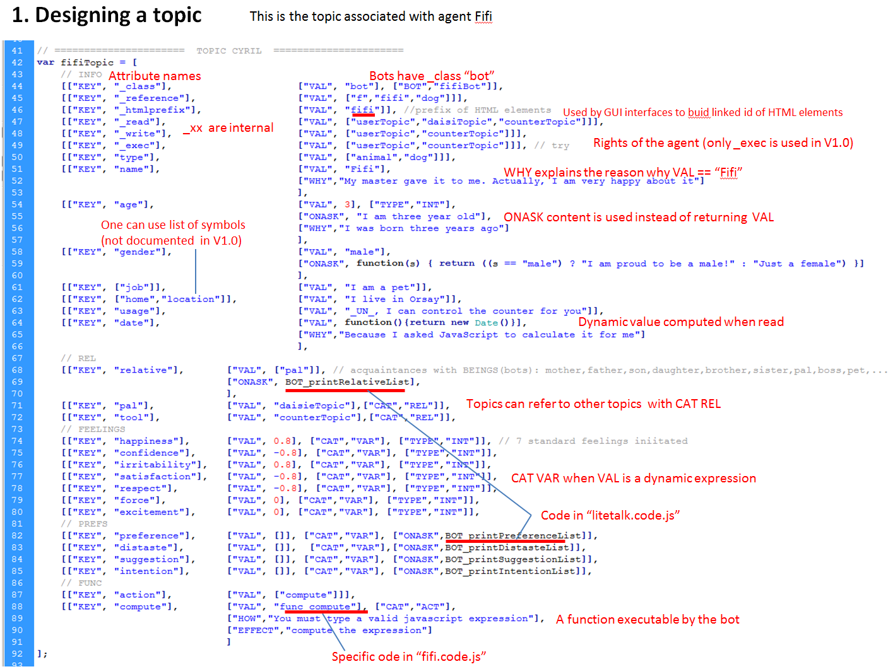
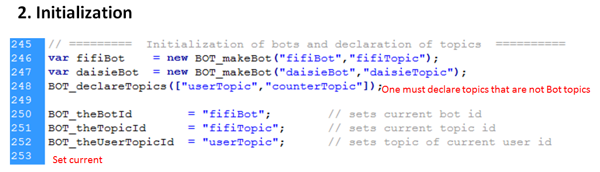

GOTO litetalk home page
Developers would be interested in using the Litetalk developer page
Contains of the download folder litetalk 1.0
Note:
-
DIVAITE demos that use litetalk are not discussed here because they need the DIVALITE toolkit
- They use
the DIVALITE GUI interface
We use the coe dof Fifi and Daisie example page to explain the process
Below are excerpts of folder demo_fifi files:
-
fifi.main.html contains the integration of the embodiment of agents and the WEB page interface
-
fifi.code.js contains the description of the model of the application: topics and specific code



SYNTAX
A Topic is Javascript data structure: an array of arrays of couples
A Topic is a list of ELEMENTS tha is basic constituents of the topic: Attributes, Functions, ..
var topicName = [ array of ELEMENTS ];
ELEMENT = [ [TAG1, expr1], [TAG2, expr2], .. [TAGn, expr-n] ]
ELEMENTS describe an entity (a part) of a Topic
TAG1 must be "KEY" and cannot be omited
Any other TAGS can be omited
Within an ELEMENT a TAG cannot occur more than once
Main TAGS are:
| KEY | denotes attributes names |
| VAL | denotes the value of the ELEMENT: value of attribute; internal name of a function, .. |
| CAT | denotes the category of the ELEMENT. typicalcategories are: INFO static information -- default VAR dynamic information ACT static action PRO static process -- nyi TODO REL dynamic pointer to another topic |
| TYPE | denotes the type of the VAL of the ELEMENT. typical types are: |
| ONASK | replaces the expr of VAL with command ask (enables to compute dynamically etc.) |
| WHY | explains teh reason of the expr in TAG VAL |
| HOW | explains how an operation in ELEMENT can be done |
| EFFECT | expalins teh effect of function in ELEMENT |
| REVERSE | denots the action that can reverse function in ELEMENT |
| ... | any other the developer wants to define |
COMPOSED KEYS
Normally values of TAG "KEYS" are symbols: age, name, gender, stop ..
However it is also possible to use composed values ["symbol1", "Symbol"2, ..]
for example [ "KEY", ["phone","home"] ]
Then these sentences will work:
ask your home phone
ask your phone
ask your phone home
when several keys share symbols the first best match is returned


Last updated: February 03, 2012